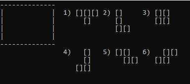
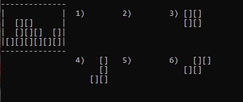

Genetic Engineering is a game first invented by Alexey Pajitnov, the maker of Tetris, sometime in the 1980s. The basic goal of the game is to try to find a way to fit all of the given tetrominoes onto a grid. When Alexey made the game, he implemented it entriely in the terminal using C, probably in a very similar manner to how I implemented my game.
Despite the games simplicity, I found that it was actually fairly difficult to implement. A proper, error free implementation requires a lot of careful thought and debugging.
My code and some screenshots are attached below. If you decide to play, I will warn you that even Alexey himself admitted the game was quite dull.
 Code here